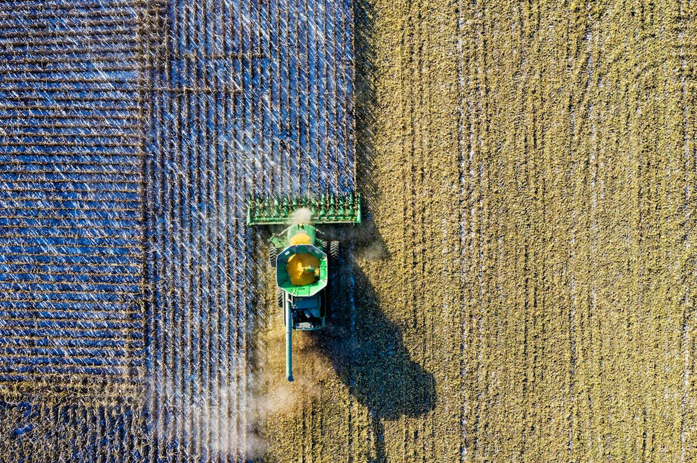
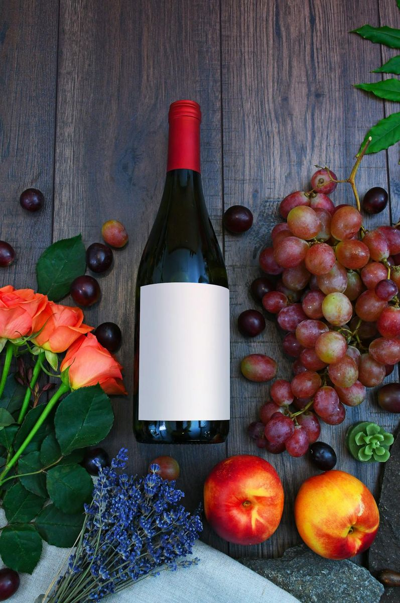
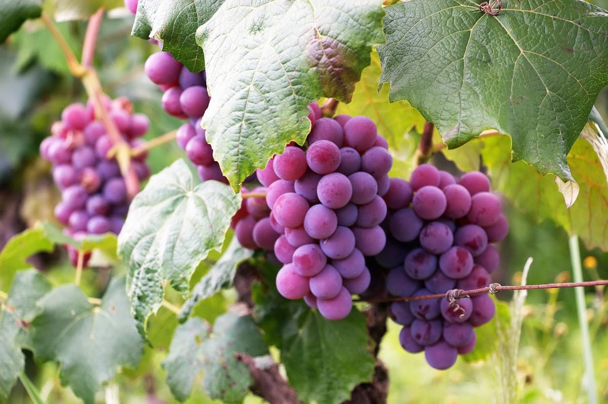

About the Authors: Sarah and Johnny are guests at Mawun Valley Farm, documenting their experiences with permaculture, slow living, and sustainable farming in Lombok.
We're currently staying at Mawun Valley Farm in Lombok, Indonesia, and one of our recent tasks was to prune and retrain the grapevines. Before picking up the clippers, we did a bit of research to decide the best approach. What we landed on? A hard prune — bold, a little scary, but ultimately the right move.
🍇 We Heard It Through the Grapevine…
Pruning grapevines can feel counterintuitive at first. Cutting back something that's growing so enthusiastically doesn't exactly feel nurturing. But what we learned is that sometimes, less really is more.
The young grapevines before pruning
🛠️ What You'll Need
- 2 ladders
- Clippers or shears
- String (for training the vines)
- Two people — one to hold the ladder steady and another to work with the vines
It's very much a team effort!
✂️ Why a Hard Prune?
From our research, we learned that to strengthen the trunk of a grapevine, it's important to prune quite drastically — especially while the vine is still establishing itself. Without pruning, the plant puts a lot of energy into growing length, leaves, and fruit. By cutting it back, you redirect that energy into building strength and structure rather than excess growth.
Identifying the strongest lead vine
🌱 Finding the Lead Vine
The first step was identifying the lead vine — the thickest, strongest, and healthiest main vine. This became our anchor point. From there, we pruned away new growth, excess vines, and leaves. Whenever the vine split, we chose the stronger, thicker branch and removed the weaker one.
Once we had a clear lead vine, we cut back roughly 30-40% of its length, taking it back to a solid foundation that will support healthier growth moving forward.
Carefully pruning back the excess growth
🪢 Training Along the Trellis
After pruning, we began training the vines along the trellis, gently weaving them in the desired direction. In a few places, we loosely tied the vines with string to help guide their growth. The key word here is loose — tight ties can restrict movement, and movement is essential for healthy development.
One thing we quickly learned: grapevine tendrils are strong. They wrap themselves tightly around anything in their path, which made pruning a little more fiddly. Snipping through those tendrils took time, but it was well worth the effort.

Weaving and tying the vines along the trellis
♻️ Nothing Goes to Waste
True to Mawun Valley Farm's ethos, nothing was wasted. The pruned vines and leaves found new life:
- Some went straight to the goats — they loved it!
- Others were saved for cooking — we're planning to make dolma with the grape leaves
- Fresh new growth was replanted in pots, in the hope that it will take root and eventually be planted alongside the existing vines
Saving the best leaves for dolma
It felt like a full-circle moment: pruning for growth, feeding the animals, and nourishing ourselves.
🌿 Growth Starts with a Good Cut
Hard pruning might look dramatic in the moment, but it's all part of building a healthier, stronger vine for the future. Sometimes growth starts with a good cut.
The finished result — ready for new growth
About the Authors: Sarah and Johnny are guests at Mawun Valley Farm, documenting their experiences with permaculture, slow living, and sustainable farming in Lombok.
Want to Learn Hands-On?
Join us at Mawun Valley Farm and experience permaculture in action.
Message Us on WhatsApp